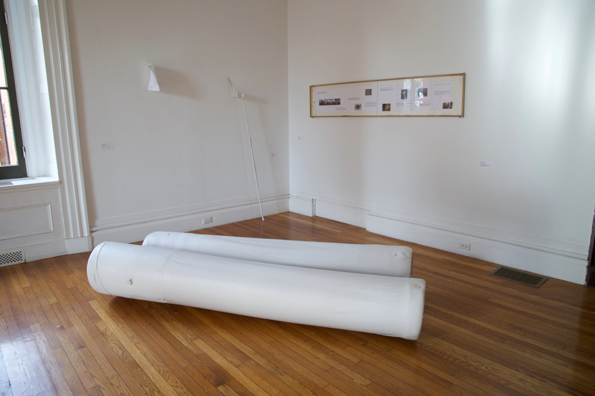

<- home
Dolphin Visualization, 2025
Installed at Woods Gerry Gallery, RISD
Glass casts of dried melon skin, found glass, pleather, steel, clay, melon lard, melon skin and seeds.

Ear (Cup), 2025
Pate de verre glass cast, pleather, and a curtain rod.